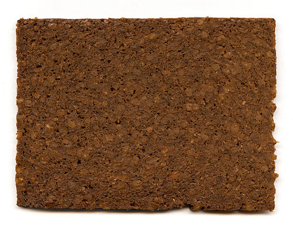
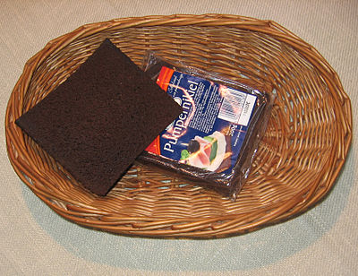

Pumpernickel (English: /ˈpʌmpərnɪkəl/; German: [ˈpʊmpɐˌnɪkl̩] is a typically heavy, slightly sweet rye bread traditionally made with sourdough starter and coarsely ground rye. It is sometimes made with a combination of flour made from rye as well as whole rye grains ("rye berries").

At one time it was traditional peasant fare, but largely during the 20th century various forms became popular through delicatessens and supermarkets. Present-day European and North American pumpernickel differ in several characteristics, including the use of additional leaveners. The North American version may have coloring and flavoring agents, added wheat flour, a higher baking temperature, and a dramatically shortened baking time.
Pumpernickel varieties are popular in the Netherlands, under the name fries roggebrood Frisian rye bread (Friesland is just over the border from the German Westphalia), where it has been a common part of the diet for centuries, and in Denmark where rugbrød is a staple. German pumpernickel is often sold sliced in small packets in supermarkets, where it may be paired with caviar, smoked salmon, sturgeon, and other expensive products on an hors d'oeuvres tray.

While some commercial bakeries mass-produce pumpernickel bread for wholesale, many American shops, stores, and families use traditional recipes and bake times. Some mass-produced pumpernickel in North America may incorporate natural colorants such as molasses, caramel color, coffee, or cocoa powder among others to imitate the various shades of brown of traditional German pumpernickel. As is common modern commercial baking practice, commercial bakeries often add wheat flour to provide gluten structure and increase rise, and commercial yeast to quicken the rise, compared to a traditional sourdough. In order to increase production and profits, the slow baking characteristic of German pumpernickel is forgone, resulting in a loaf indiscernible from dark rye bread. Some shops and boutique bakeries in America still use centuries old recipes, often also selling other German foods. Pumpernickel is also a popular bagel flavor in New York.